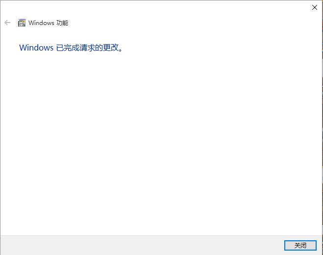

人非圣贤，马有失蹄。虽然说NETGEAR 8000刷机和设置过程还是相对安全的，万一遇到断电等不可抗因素和设置过程中误设置，还是有成砖头的危险。一般来说，只要硬件无损坏，不去刷死CFE，都是可以救回来的。
如何刷DD固件就不在这里说了，直接升级就可以了！想刷回固件也很方便，第一种方法也是采用直接升级就好了，第二种就是下面这种应付各种意外情况的刷机。
一、准备工具¶
如果遇到上述链接无法访问，请您自行想办法。
友情提示：中国拥有世界上第八大奇迹——长城。
二、安装TFTP客户端¶
这步基本上很简单，按照下面图示操作就好了。
基本流程就是：找到计算机中的卸载或更改程序（程序和功能），在左侧的打开或关闭Windows功能中，勾选TFTP客户，点击确定就好。

三、拆解R8000，并连接TTL¶
要说明的是，拆解会让你的R8000失去保修。拆掉R8000螃蟹壳上的10壳螺丝，其中有一颗螺丝在贴纸下方，需要揭掉贴纸。并拆掉天线连接，拿出主板，按照下图说明，和买来USB to TTL连接，进入准备刷机的状态。
P.S. 建议拆机，手接触主板之前，用手摸摸暖气，把自己脱个精光。
四、设置Putty¶
1、在计算机的设备管理器中检查COM端口，并设置为“115200”，数据位“8”，停止位“1”。
2、打开PuTTY，按照下图进行设置。
3、回到PuTTY的主页面，选择连接方式为Serial并填入相对的COM端口，传输速率会自动变成之前设置好的。
4、运行PuTTY，在R8000未通电开启之前，PuTTY窗口样式为下图。
五、满血复活¶
1、插入R8000电源，可以看到Putty界面上会显示一堆初始化，开机信息，这个时候，点进Puttty窗口中，不断的按CTRL-C，终止初始化，进入CFE模式，此时会显示如下信息：
Startup Canceled
CFE>
2、通过以下命令擦除现有固件
CFE> nvram erase
3、重启R8000
CFE> reboot
4、重复1中的动作，再次进入CFE模式。
5、进入TFTP模式，键入命令后，会出现如下界面。
CFE> tftpd
Start TFTP Server
Reading : :
6、到此路由器设置，完毕，下面我们将网线插入R800的LAN口中，另一端与电脑相连，并在电脑上对以太网属性，进行如下设置。
7、以管理员打开命令提示符，并确认R8000进入TFTP模式（TTL = 100）。
ping 192.168.1.1
8、使用CMD的CD命令定位刚刚下载的CHK文件的所在目录，并执行以下命令上传至R8000。
tftp -i 192.168.1.1 PUT R8000-V1.0.2.44_1.0.96.chk
9、等待，大概需要3-5分钟，访问192.168.1.1会看到熟悉的界面。
六、结束语¶
因为误设置导致R8000变砖，但实际刷完DD-WRT，感觉性能还不如原版固件，不知道是不是因为我设置不对的问题，求大神讲解设置过程。